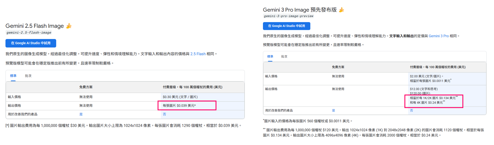
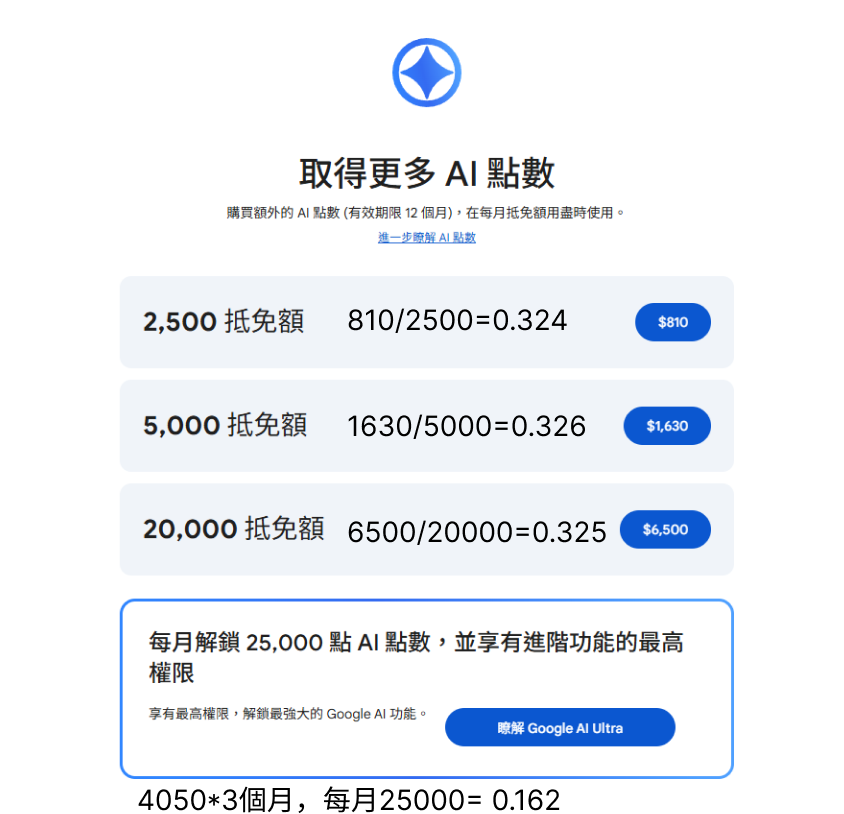
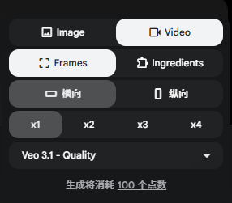
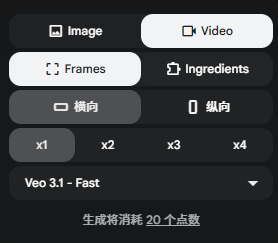
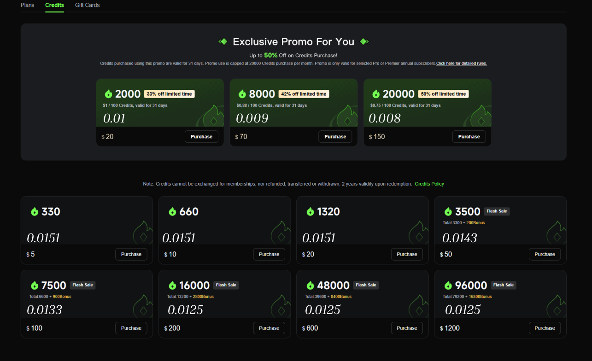

明確的影片內容要素
影片主題、溝通核心概念、視覺風格、劇情綱要、劇情細節、人物、場景、道具、音樂型態....以及任何對於影片的想像元素，以及特定物件的照片提供
主題：「春節團圓」與「海外旅遊」的聯結。
影片展現了農曆新年的傳統習俗，並透過「旅行」賦予團圓新的意義。
「有你的旅程，哪裡都是家」。
概念：品牌強調旅行不只是離開家，而是與心愛的人一起創造共同的回憶，將家的感覺延伸到世界的任何角落。
風格定位
真人風格 (Live-action)。寫實的人物與居家場景，營造強烈的親近感與生活氣息。
色調
溫暖且飽和。以企業色「紅色」為視覺主軸，搭配黃光，最後轉向夕陽餘暉的粉紫色澤。
運鏡
中景與特寫交替。捕捉家人笑容、Surprise眼神，及登機證等關鍵物件細節。
兒子一家三口回到奶奶家過年。全家人的年節活動後，在紅包環節發現驚喜，準備出國旅遊。
除夕夜，家裡佈置得喜氣洋洋。全家人一起寫春聯、貼「囍」字，客廳充滿歡笑。圍爐時刻餐桌豐盛，特別是奶奶精心將肉片排成「花開富貴」花朵，舉杯慶祝。飯後在客廳玩華航特製大富翁「環遊世界」，小孫女興奮擲骰。拜年時間，奶奶遞給孫女紅包，發現裡面是前往東京的登機證！驚喜萬分之際，全家穿上紅衣、收拾行李，開心出發展開旅程。
- 傳統習俗： 寫春聯、貼「囍」字貼紙。
- 圍爐年菜： 吃火鍋，展示肉片「花開富貴」與「年年有餘」的魚。
- 家庭娛樂： 玩大富翁型態桌遊「環遊世界」。
- 拜年驚喜： 紅包中裝著前往東京（TOKYO）的登機證。
- 開心出發： 穿上紅色系服裝、收拾行李步出家門。
奶奶
慈祥、充滿驚喜，凝聚家族情感的核心。
約 60-70 歲
典雅的紅白色系拼接上衣，配戴珍珠項鍊。
兒子
孝順且充滿活力的現代父母形象。
約 30-35 歲
米白色高領毛衣，營造溫暖、可靠氣質。
媳婦
孝順且充滿活力的現代父母形象。
約 30-35 歲
亮紅色的露肩針織上衣，展現現代時尚感。
小女孩
天真無邪，代表著對新事物與旅程的期待。
年紀約 5-7 歲，綁雙丸子頭。
米色針織開襟衫搭配粉色系格子裙。
- 關鍵場景： 喜氣洋洋的奶奶家客廳、溫馨圍爐餐桌、準備出發的居家門口。
- 核心道具： 中華航空登機證(東京)、大富翁桌遊「環遊世界」、「花開富貴」肉片年菜、春聯。
- 氛圍元素： 紅包袋、華航企業色紅白系服裝、室內溫暖黃光、夕陽粉紫色澤。
風格： 輕快、和諧且節奏明亮的配樂。
層次： 音樂隨著劇情的發展由溫馨平穩轉向高昂活潑，呼應及強化全量出國旅行的興奮心情。
有了明確的影片內容要素後...
影片元素形象定調
人物、場景、視覺風格、道具....等文字描述圖像化
影片分鏡 [文字+圖]
逐格溝通腳本
影片生成與後製(開頭30S先行，階段性、滾動調整)
圖片

假設 5s 一張圖，300s 共 60 張，每張 15 次，可能有時候 1-2 秒就會換一張圖，再 *2
60 * 15 * 2 = 1800 (張)
1800 * (0.134 ~ 0.24) * 32 = $7,718 ~ $13,824 TWD
影片 (1080p)
Google 影片單次長度 8 秒



單次生成 8 秒影片
1s = 2.5 ~ 12.5點
5 分鐘 300s = 750~3750點(每個片段只生成一次)
每個片段都生成 15 次 = 11250~56250點
Kling 影片單次長度 5 秒

單次生成 5 秒影片
1s = 5 ~ 12 點
5 分鐘 300s = 1500~3600點(每個片段只生成一次)
每個片段都生成 15 次 = 22500~54000點